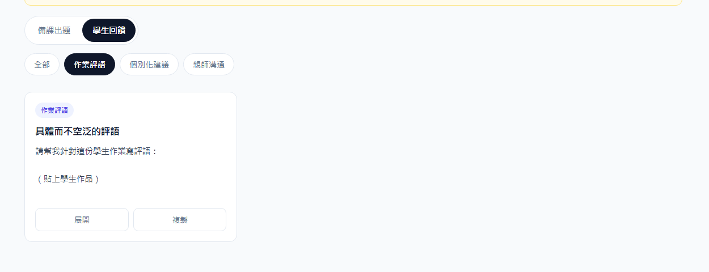
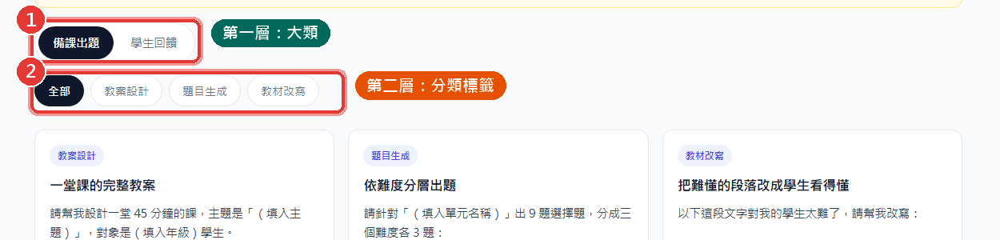
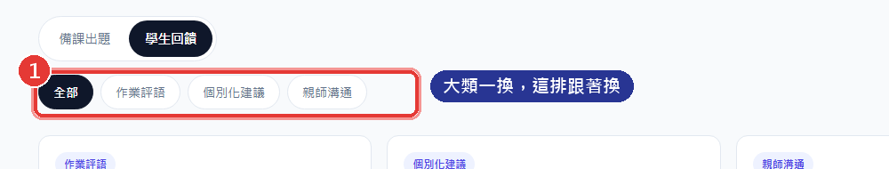
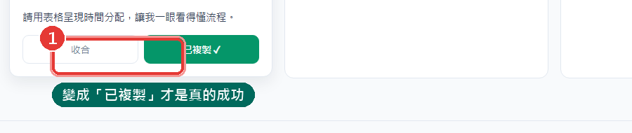
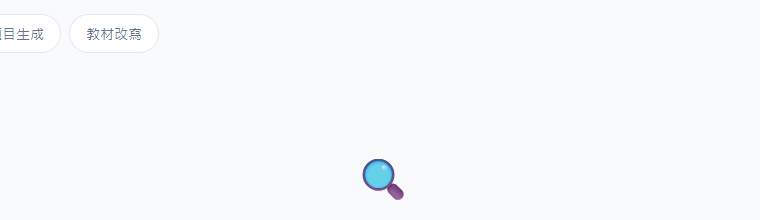
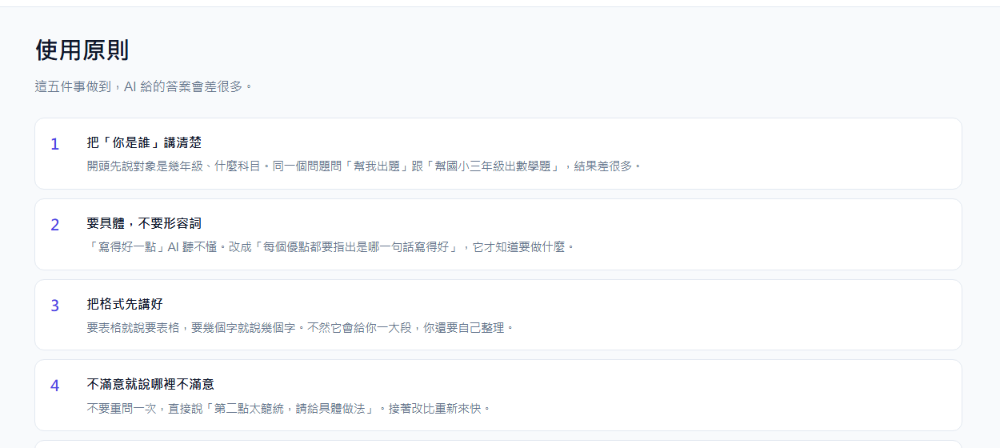

專案一：影片轉 Skill × 網站復刻
P1
影片轉 Skill × 互動網站復刻
把「看得到卻拿不到原始碼」的網站，變成 AI 能重複使用的技能包
難度★★☆☆☆
要準備的瀏覽器、Python、FFmpeg
需要憑證完全不需要
阿亮老師 · AI Coding 實作課程
專案一 · 影片轉 Skill先看成果
① 先看成果
這是這堂課結束時，你電腦裡會有的東西——一個自己做出來的互動網站。

▲ 完成的「教師 AI 指令庫」：上面選大類，下面選標籤，卡片跟著換
▲ 每張卡片可以展開看全文，按一下就複製到剪貼簿
但真正的重點不是這個網站。是你會學到一套方法：把一個只能看、不能拿的網站，
變成 AI 看得懂的規格書，然後讓 AI 照著做出來。
阿亮老師 · AI Coding 實作課程02
專案一 · 影片轉 Skill把需求講清楚
② 把需求講清楚
同一件事，換一種講法，AI 給你的東西天差地遠。先看這兩種問法的差別。
❌ 這樣問幫我做一個跟這個網站一樣的網頁。
✅ 這樣問我給你一份 SKILL.md 和一個 references 資料夾，
裡面是我操作某個網站時抽出來的畫面。請你讀完之後，照著裡面寫的版面規則與互動規則，
做一個單一 HTML 檔的網站，內容用我自己的主題。
差在哪裡？左邊要 AI「猜」，右邊給 AI「規格」。而這份規格，
就是我們今天要做的東西。
本單元完整指令（做完 references 之後，整段複製給 AI）
請讀取 references 資料夾裡的所有圖片，以及 references_index.md。
這些圖是我操作一個網站時抽出來的關鍵畫面。請幫我做兩件事：
第一，寫一份 SKILL.md，內容要包含：
1. 這個網站的版面規則（顏色、字體、圓角、間距）
2. 有哪些互動（按鈕、篩選、展開、複製、搜尋）
3. 每個互動的預期行為（點下去之後應該發生什麼）
4. 一份驗收清單，讓我可以逐項確認有沒有做到
第二，依照這份 SKILL.md，做出一個單一 HTML 檔的網站。
要求：CSS 和 JS 都寫在同一個檔案裡，不要用任何框架或打包工具，
用瀏覽器直接打開就能跑。
內容不要抄原網站，請用「教師常用的 AI 指令」當主題，我自己會再改。
為什麼要這樣寫：整段話裡沒有半個技術術語，
但把「輸入是什麼」「要產出什麼」「有什麼限制」「怎麼算做完」全講清楚了。
這就是本課程一直強調的：不用會寫程式，但要會把需求講到沒有模糊空間。
阿亮老師 · AI Coding 實作課程03
專案一 · 影片轉 Skill單元說明
③ 這個單元在做什麼
學完你會
- 把一段螢幕錄影，自動抽成一疊「有代表性」的畫面
- 把這疊畫面整理成 AI 讀得懂的 references
- 讓 AI 寫出一份可以重複使用的 SKILL.md
- 用這份 SKILL.md 產生一個真的能跑的互動網站
整體流程
螢幕錄影（Win+G 或 OBS）
↓
FFmpeg 抓出畫面有變化的影格 ← 本機做，不用帳號
↓
去掉長得太像的重複圖
↓
references/ ＋ 索引檔
↓
交給 Claude Code 或 Codex 讀圖 ← 用你已經有的工具
↓
產出 SKILL.md
↓
依 SKILL.md 產生網站
這一課真正的觀念
我們不是在教你用某一個工具，是在教你自己建一條產線。
市面上有現成的軟體可以做類似的事，但它要付費帳號，而且中間發生什麼你看不到。
自己建的話：每一步都看得見、不用花錢、想改就改。
可以用在哪裡
學會這條產線之後，任何「我看過某個東西，想做一個類似的」都適用：
課程網站、報名表單、資料查詢頁、活動介紹頁。錄影、抽幀、寫規格、產生，流程完全一樣。
阿亮老師 · AI Coding 實作課程04
專案一 · 影片轉 Skill動手之前
④ 動手之前，先看這裡
這一課看起來步驟不少，但每一步都很短。真正花時間的只有錄影那一段，
而那一段你只是打開網站點一點，不需要任何技術。
先讓你放心的三件事
- 不用寫程式。你要做的是「錄影」和「跟 AI 說話」，程式碼由 AI 寫。
- 不用申請任何帳號。整條產線只用到 FFmpeg 和你已經有的 AI 工具。
- 做壞了不會怎樣。所有東西都在你自己的資料夾裡，刪掉重來就好。
卡住了先看這三招
| 狀況 | 先試這個 |
|---|
| 執行程式說「找不到 ffmpeg」 |
裝完 FFmpeg 要關掉終端機再重開，電腦才找得到它 |
| 抽出來的圖太少或太多 |
打開程式最上面的設定區，把 SCENE_THRESHOLD 調小（抽多）或調大（抽少） |
| AI 產出的網站怪怪的 |
不要重問一次。直接說「第幾點沒做到，請修正」，接著改比重來快 |
錄影前請先確認：畫面上不要有你的密碼、金鑰、私人信件或別人的個資。
錄影會把整個畫面錄下來，之後這些圖還要交給 AI。
阿亮老師 · AI Coding 實作課程05
專案一 · 影片轉 Skill跟著老師做一次
⑤ 跟著老師做一次
步驟 0：先確認電腦有 Python
打開終端機（按鍵盤左下角的 Win 鍵，直接輸入「終端機」三個字，
按 Enter 就會打開一個黑色或藍色的視窗）。在裡面輸入這一行後按 Enter：
python --version
| 看到什麼 | 代表 |
|---|
Python 3.12.x（有版本號就好） | 已經有了，直接做步驟 1 |
| 跳出「Microsoft Store」視窗 | 還沒裝。關掉它，改用下面的方式裝 |
| 說找不到 python | 還沒裝 |
沒有的話，在終端機貼上這一行安裝：
winget install Python.Python.3.12
裝完一定要把終端機視窗關掉、再重新打開一次。
這是最多人卡住的地方——不重開的話，電腦還是會說「找不到 python」。
步驟 1：裝 FFmpeg（負責處理影片的工具）
同樣在終端機貼上這一行：
winget install Gyan.FFmpeg
裝完一樣要把終端機關掉再重開。
重開後輸入 ffmpeg -version，看到一堆版本資訊就代表成功了
（內容看不懂沒關係，有跑出東西就對了）。
先把檔案放好
在桌面上開一個新資料夾，名字取 AI課程。
等一下錄好的影片、下載的程式，全部放在這個資料夾裡。
放在一起，指令才不會找不到檔案。
阿亮老師 · AI Coding 實作課程06
專案一 · 影片轉 Skill跟著老師做一次
步驟 2：錄一段操作影片
打開你想參考的網站，按 Win + G 叫出 Windows 內建的錄影工具，
按下錄影鈕，然後把網站正常操作一遍：點分頁、點按鈕、往下捲、切換分類。
錄 1～2 分鐘就夠了，錄完按停止。
錄的時候動作放慢一點。每個畫面停個一兩秒再點下一個。
太快的話抽出來的圖會全是動畫做到一半的模糊畫面。
錄好的影片預設會存在「本機 → 影片 → 擷取」資料夾，
把它複製到桌面的 AI課程 資料夾。
步驟 3：把影片變成一疊畫面
這一步要在剛才那個資料夾裡開終端機。最簡單的方法：
- 打開
AI課程 資料夾
- 在上方的網址列點一下，把裡面的文字整段刪掉
- 輸入
cmd 然後按 Enter
會跳出終端機，而且已經在正確的位置了。接著輸入：
python extract_keyframes.py 你的影片檔名.mp4
檔名很長不想打？輸入 python extract_keyframes.py
（最後留一個空白），然後把影片檔直接用滑鼠拖進終端機視窗，
檔名會自動填進去。按 Enter 就開始跑。
跑完會看到這樣的訊息，資料夾裡也會多出一個 references：
正在抽取關鍵幀（門檻 0.3）...
抽出 6 張
去掉重複後剩下 6 張
已產生索引：references\references_index.md
如果說「找不到 python」或「找不到 ffmpeg」——
幾乎都是因為裝完沒有把終端機關掉重開。關掉再開一次就好。
阿亮老師 · AI Coding 實作課程07
專案一 · 影片轉 Skill跟著老師做一次
步驟 4：填索引，告訴 AI 每張圖是什麼
打開 references/references_index.md，把「（請填寫）」換成你自己的說明。
一句話就好，例如：
| `kf_01.png` | 進站跳出的歡迎視窗，背景模糊，有兩顆按鈕 |
| `kf_03.png` | 資料庫頁：雙層篩選，上面大類、下面標籤 |
這一步不能跳過。AI 看得到圖，但不知道哪張圖對應哪個操作步驟，
你的說明就是它的地圖。
步驟 5：把整包交給 AI
把第 ② 節那段完整指令複製給 Claude Code 或 Codex，它會產出 SKILL.md 和網站。
步驟 6：打開成品，逐項驗收
用瀏覽器打開產生出來的 HTML 檔。第一個看到的應該是歡迎視窗：
▲ 進站視窗：背景要有模糊效果，兩顆按鈕都要能按
關掉視窗後是首頁：
▲ 首頁：大標題、兩顆主要按鈕、三張說明卡
阿亮老師 · AI Coding 實作課程08
專案一 · 影片轉 Skill跟著老師做一次
步驟 7：檢查雙層篩選
這是整個網站最值得學的互動：上面選大類，下面那排標籤會跟著整批換掉。

▲ 第一層是大類，第二層是這個大類底下的分類標籤

▲ 換一個大類，下面那排標籤整批換掉——這就是「雙層」的意思
步驟 8：檢查展開與複製
▲ 兩顆按鈕：展開看全文、複製整段指令
按下複製之後，按鈕文字要變成「已複製」，過一秒半再變回來。
這個回饋很重要——沒有它，使用者不知道到底複製到了沒有。

▲ 變成綠色的「已複製 ✓」，這樣使用者才安心
阿亮老師 · AI Coding 實作課程09
專案一 · 影片轉 Skill跟著老師做一次
步驟 9：檢查搜尋與空狀態
在搜尋框打字，卡片要即時過濾。打一個一定找不到的字，要出現提示：

▲ 找不到時要給提示，不能只留一片空白
這是很常被忽略的細節。沒有空狀態提示的話，
使用者會以為網站壞了。要求 AI 補這個，只要一句話：「搜尋沒結果時請顯示提示訊息」。
步驟 10：檢查手機版
把瀏覽器視窗縮到很窄（或按 F12 切換到手機模式），畫面要自動變成單欄：
▲ 手機寬度下自動變單欄，不會出現左右捲動
步驟 11：看一下使用原則頁

▲ 第三個分頁：條列式的內容頁，用來確認分頁切換真的有換內容
阿亮老師 · AI Coding 實作課程10
專案一 · 影片轉 Skill程式碼與解說
⑥ 程式碼全文與中文解說
這支程式叫 extract_keyframes.py，做三件事：抽幀、去重複、產生索引。
下面把它一段一段拆開講。
設定區與檢查 FFmpeg
# -*- coding: utf-8 -*-
"""
單元一：把操作影片變成 references 關鍵幀
用法：
python extract_keyframes.py 影片檔.mp4
做三件事：
1. 用 FFmpeg 的場景偵測抽出「畫面有明顯變化」的影格
2. 用感知雜湊去掉長得太像的重複圖
3. 產生 references_index.md，讓 AI 知道每張圖是什麼
阿亮老師 · AI Coding 實作課程
"""
import os
import sys
import subprocess
import shutil
# ========== 設定區：想調整就改這裡 ==========
SCENE_THRESHOLD = 0.30 # 場景變化門檻。畫面變化超過這個比例就抽一張
# 0.2 抽比較多、0.5 抽比較少
MAX_KEYFRAMES = 40 # 最多留幾張（太多張 AI 讀不完，也浪費錢）
SIMILAR_LIMIT = 5 # 兩張圖的差異小於這個數字就視為重複
OUT_DIR = 'references' # 圖片輸出資料夾
# ==========================================
def check_ffmpeg():
"""先確認 FFmpeg 裝好了，沒裝就講清楚怎麼裝"""
if shutil.which('ffmpeg') is None:
print('找不到 FFmpeg。')
print('請先安裝：在終端機執行 winget install Gyan.FFmpeg')
print('裝完要「關掉終端機再重開」，電腦才找得到它。')
return False
return True
這段在做什麼：最上面四個設定值就是這支程式的全部旋鈕。
下面的 check_ffmpeg() 先確認 FFmpeg 裝好了沒，沒裝就直接告訴你怎麼裝，
而不是丟一堆看不懂的錯誤訊息。
哪裡可以改成自己的：SCENE_THRESHOLD 是最常調的。
抽出來的圖太少就調小（例如 0.2），太多就調大（例如 0.5）。
阿亮老師 · AI Coding 實作課程11
專案一 · 影片轉 Skill程式碼與解說
第一步：叫 FFmpeg 抽出畫面有變化的影格
def extract(video):
"""第一步：用 FFmpeg 抽出場景有變化的影格"""
if os.path.exists(OUT_DIR):
shutil.rmtree(OUT_DIR)
os.makedirs(OUT_DIR)
pattern = os.path.join(OUT_DIR, 'raw_%03d.png')
# ⚠️ 新版 FFmpeg（9.0 起）已經移除 -vsync，改用 -fps_mode。
# 網路上的舊教學幾乎都還寫 -vsync，直接照抄會失敗。
# 這裡先試新寫法，失敗再退回舊寫法，新舊版本都能跑。
base = ['ffmpeg', '-i', video,
'-vf', "select='gt(scene,%s)'" % SCENE_THRESHOLD,
'-loglevel', 'error']
print('正在抽取關鍵幀（門檻 %s）...' % SCENE_THRESHOLD)
r = subprocess.run(base + ['-fps_mode', 'vfr', pattern])
if r.returncode != 0:
print('新版寫法不支援，改用舊版 -vsync 再試一次')
subprocess.run(base + ['-vsync', 'vfr', pattern], check=True)
files = sorted(os.listdir(OUT_DIR))
print('抽出 %d 張' % len(files))
return files
這裡有一個真的踩過的坑，值得記住。
新版 FFmpeg（9.0 之後）把 -vsync 這個參數移除了，
改成 -fps_mode。但網路上幾乎所有教學都還寫著舊的寫法，
直接照抄就會失敗。
所以這裡的寫法是：先試新的，失敗再退回舊的，新舊版本都能跑。
這就是為什麼「AI 給的答案要自己跑過一次」——AI 學到的可能是舊寫法。
阿亮老師 · AI Coding 實作課程12
專案一 · 影片轉 Skill程式碼與解說
第二步：怎麼判斷兩張圖「長得像」
def phash(path):
"""算一張圖的感知雜湊：縮成 9x8 灰階，比較左右相鄰像素的亮暗"""
from PIL import Image
im = Image.open(path).convert('L').resize((9, 8))
px = [im.getpixel((x, y)) for y in range(8) for x in range(9)]
bits = []
for row in range(8):
for col in range(8):
left = px[row * 9 + col]
right = px[row * 9 + col + 1]
bits.append('1' if left > right else '0')
return ''.join(bits)
def diff(a, b):
"""兩個雜湊差幾個位元。數字越小代表兩張圖越像"""
return sum(1 for x, y in zip(a, b) if x != y)
這段在做什麼：這是「感知雜湊」。
把圖片縮成很小的灰階圖，然後比較左右相鄰的像素誰比較亮，
得到一串 0 和 1。兩張圖的這串數字差越少，代表越像。
比對整張圖的每個像素太慢，這個方法又快又夠用。
哪裡可以改成自己的：SIMILAR_LIMIT 越小越嚴格
（只有幾乎一模一樣才算重複），越大越寬鬆。
阿亮老師 · AI Coding 實作課程13
專案一 · 影片轉 Skill程式碼與解說
第三步：去掉重複、均勻取樣、重新命名
def dedupe():
"""第二步：把長得太像的圖刪掉，只留下真正不一樣的畫面"""
files = sorted(f for f in os.listdir(OUT_DIR) if f.startswith('raw_'))
kept = []
hashes = []
for name in files:
path = os.path.join(OUT_DIR, name)
h = phash(path)
# 跟已經留下來的每一張比，只要跟其中一張太像就丟掉
if any(diff(h, old) < SIMILAR_LIMIT for old in hashes):
os.remove(path)
continue
hashes.append(h)
kept.append(name)
print('去掉重複後剩下 %d 張' % len(kept))
# 太多張就均勻取樣，不要頭尾都擠在一起
if len(kept) > MAX_KEYFRAMES:
step = len(kept) / float(MAX_KEYFRAMES)
picked = [kept[int(i * step)] for i in range(MAX_KEYFRAMES)]
for name in kept:
if name not in picked:
os.remove(os.path.join(OUT_DIR, name))
kept = picked
print('太多張，均勻取樣後保留 %d 張' % len(kept))
# 重新命名成 kf_01.png、kf_02.png……，順序才看得懂
final = []
for i, name in enumerate(kept, start=1):
new = 'kf_%02d.png' % i
os.rename(os.path.join(OUT_DIR, name), os.path.join(OUT_DIR, new))
final.append(new)
return final
這段在做什麼：每張新圖都跟「已經留下來的圖」比一遍，
太像就刪掉。如果留下來還是太多張，就均勻取樣——
從頭到尾平均挑，而不是只取前面幾張，這樣才涵蓋整段操作流程。
最後重新命名成 kf_01、kf_02，順序一眼看得懂。
阿亮老師 · AI Coding 實作課程14
專案一 · 影片轉 Skill程式碼與解說
第四步：產生索引檔與主流程
def write_index(files, video):
"""第三步：產生索引檔，讓 AI 知道每一張圖是什麼"""
path = os.path.join(OUT_DIR, 'references_index.md')
with open(path, 'w', encoding='utf-8') as f:
f.write('# References 索引\n\n')
f.write('來源影片：`%s`\n\n' % os.path.basename(video))
f.write('> 請在「這張畫面在做什麼」欄位填上說明，AI 會照著這份索引理解畫面。\n\n')
f.write('| 檔案 | 這張畫面在做什麼 |\n|---|---|\n')
for name in files:
f.write('| `%s` | （請填寫） |\n' % name)
print('已產生索引：%s' % path)
return path
def main():
if len(sys.argv) < 2:
print('用法：python extract_keyframes.py 影片檔.mp4')
return
video = sys.argv[1]
if not os.path.exists(video):
print('找不到影片：%s' % video)
return
if not check_ffmpeg():
return
extract(video)
files = dedupe()
if not files:
print('沒有抽到任何畫面。試試看把 SCENE_THRESHOLD 調小一點（例如 0.2）。')
return
write_index(files, video)
print()
print('完成。接下來把整個 %s 資料夾交給 Claude Code 或 Codex，' % OUT_DIR)
print('請它「依照這些畫面寫一份 SKILL.md」。')
if __name__ == '__main__':
main()
這段在做什麼：產生一份表格式的索引檔，
讓你填「這張畫面在做什麼」。這份索引是 AI 的地圖，
它看得到圖，但要靠你的說明才知道每張圖對應哪個操作。
最後的 main() 把四個步驟串起來，並在每一步都印出進度，
讓你知道程式跑到哪裡了。
阿亮老師 · AI Coding 實作課程15
專案一 · 影片轉 Skill用在你自己的場合
用在你自己的場合，要改哪裡
| 你想做的 | 要改哪裡 |
|---|
| 抽出來的圖太少 |
SCENE_THRESHOLD 從 0.3 調到 0.2 或 0.15 |
| 抽出來的圖太多、太雜 |
SCENE_THRESHOLD 調到 0.4～0.5；或把 MAX_KEYFRAMES 調小 |
| 明明不一樣的畫面被當成重複刪掉 |
SIMILAR_LIMIT 從 5 調小到 3 |
| 想做的不是網站，是操作教學 |
程式完全不用改。索引檔的說明改成寫「第幾步在做什麼」，
然後叫 AI 產出操作手冊而不是網站 |
| 網站要換成自己的主題 |
打開產出的 HTML，最上面有一段 PROMPTS 陣列，
改裡面的文字就好，不用動其他地方 |
| 想加新的分類 |
同樣在 HTML 上方的 MAIN_CATS 裡加一行 |
這張表就是這條產線的價值：下次要做別的東西，流程一模一樣，
只是換掉幾個設定值。
阿亮老師 · AI Coding 實作課程16
專案一 · 影片轉 Skill驗收與下載
⑦ 成果驗收清單
逐項打勾，全部打完這一課就完成了。
產線部分
- 終端機輸入
ffmpeg -version 看得到版本號
- 錄好一段 1～2 分鐘的操作影片
- 執行抽幀程式，有產生 references 資料夾
- 資料夾裡有 kf_01、kf_02…等圖片
- 索引檔的「（請填寫）」都填上說明了
網站部分
- 用瀏覽器打開 HTML，畫面正常不是空白
- 進站視窗會跳出來，背景是模糊的
- 兩顆按鈕都有作用，勾「不再顯示」後重整真的不跳了
- 三個分頁都能切換，內容確實不一樣
- 換大類時，下面那排標籤會整批換掉
- 點標籤會過濾卡片
- 卡片可以展開、可以收合
- 按複製會變成「已複製」，貼到記事本真的有東西
- 搜尋會即時過濾，打亂碼會出現找不到的提示
- 視窗縮窄後變單欄，沒有左右捲動
- 按 F12 打開主控台，沒有紅色錯誤
⑧ 程式碼下載
本單元的檔案：
| 檔名 | 是什麼 |
|---|
extract_keyframes.py | 抽幀程式（159 行） |
SKILL.md | 技能包規格書 |
教師AI指令庫.html | 完成的網站，可直接打開 |
阿亮老師 · AI Coding 實作課程17